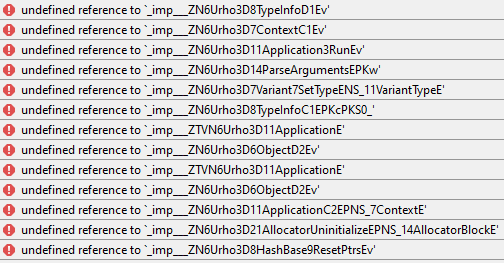
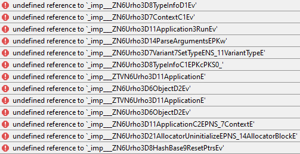

Hi, all
I try to set up Urho3D (Static, MinGW) in Qt Creator IDE. I use Qt 5.15.2 MinGW. I tried to set up:
But every time I get these errors (848 issues for Urho3D-1.8 and 780 issues for Urho3D-1.7):
For Urho-1.7:

For Urho-1.8:

As you can see the first errors are the same for Urho-1.7 and Urho-1.8.
I thought may be it is because Qt 5.15 uses “mingw81_32” that is not compatible with Urho MinGW.
I try to write an instruction for beginners. These are my step:
How to set up Urho3D (Static, MinGW) in Qt Creator IDE
It is so simple to setup Urho in Qt Creator IDE on Windows 10:
- Download and install Open Source Qt MinGW: Download Qt Open Source
- Download and unzip " Urho3D-1.7-MinGW-STATIC.zip ", for example, to “E:/Libs” folder
- Run Qt Creator and create a new project: “File” > “New File or Project” > “Other Project” > “Empty qmake Project” > click the “Choose…” button > type a name of project, for example: Urho3D_QtCreator > click “Next” > “Next” > “Finish”
- Create a “main.cpp” file and copy this code to it:
#include <Urho3D/Engine/Application.h>
#include <iostream>
class MyApp : public Urho3D::Application
{
public:
MyApp(Urho3D::Context * context) : Urho3D::Application(context)
{
}
virtual void Setup()
{
std::cout << "Setup" << std::endl;
}
};
URHO3D_DEFINE_APPLICATION_MAIN(MyApp)
- Copy these settings to the .pro file:
Urho3D_QtCreator.pro
CONFIG += c++11
INCLUDEPATH += "E:\Libs\Urho3D-1.7-MinGW-STATIC\include"
LIBS += -L"E:\Libs\Urho3D-1.7-MinGW-STATIC\lib\Urho3D"
LIBS += -lUrho3D -lkernel32 -luser32 -lgdi32 -lwinspool -lshell32 -lole32 -loleaut32 -luuid -lcomdlg32 -lSetupapi -ladvapi32 -lwinmm -limm32 -lversion -lws2_32 -ldbghelp -lopengl32
SOURCES += \
main.cpp
- Run the project by pressing on the green triangle button in left bottom corner (or Ctrl + R). You will see an empty window created by Urho3D.